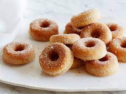

Best Cake Doughnuts

Description
A cake donut recipe that's simple to make and lightly spiced with cinnamon and nutmeg. Coat with cinnamon sugar or a confectioners' sugar glaze.
Ingredients
- 1/2 cup white sugar
- 1 tablespoon baking powder
- 1 teaspoon salt/li>
- 1/4 teaspoon ground cinnamon
- 1 dash ground nutmeg
- 2 tablespoons melted butter
- 1/2 cup milk
- 1 egg, beaten
- 1 quart oil for frying
Steps
- Heat oil in a deep-fryer to 375 degrees F (190 degrees C).
- Sift together flour, sugar, baking powder, salt, cinnamon, and nutmeg in a large bowl. Mix in butter until crumbly. Stir in milk and egg until smooth.
- Knead lightly, then turn out onto a lightly floured surface. Roll or pat to 1/4-inch thickness. Cut with a doughnut cutter, or use two round biscuit cutters of different sizes.
- Lay doughnuts in hot oil, a few at a time. Do not overcrowd the pan, or oil may overflow. Fry, turning once, until golden, about 3 minutes. Drain on paper towels.